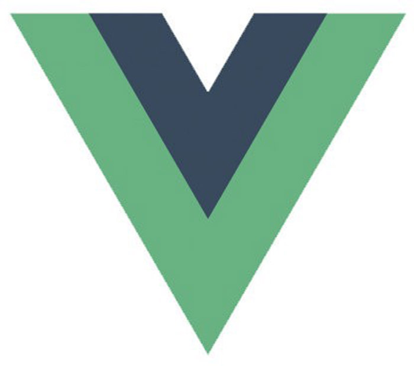

泰山職訓局
從零開始的網頁設計課程
轉職網頁開發人員 掌握就業必備職能
由淺入深學習技術 強化職場的競爭力

HTML
超文本標記語言（英語：HyperText Markup
Language，簡稱：HTML）是一種用於建立網頁的標準標記語言。HTML是一種基礎技術，常與CSS、JavaScript一起被眾多網站用於設計網頁、網頁應用程式以及行動應用程式的使用者介面[3]。網頁瀏覽器可以讀取HTML檔案，並將其彩現成視覺化網頁。HTML描述了一個網站的結構語意隨著線索的呈現，使之成為一種標記語言而非程式語言。
HTML元素是構建網站的基石。HTML允許嵌入圖像與物件，並且可以用於建立互動式表單，它被用來結構化資訊——例如標題、段落和列表等等，也可用來在一定程度上描述文件的外觀和語意。HTML的語言形式為尖括號包圍的HTML元素，瀏覽器使用HTML標籤和指令碼來詮釋網頁內容，但不會將它們顯示在頁面上。

CSS3
階層式樣式表（英語：Cascading Style
Sheets，縮寫：CSS；又稱串樣式列表、級聯樣式表、串接樣式表、階層式樣式表）是一種用來為結構化文件（如HTML文件或XML應用）添加樣式（字型、間距和顏色等）的電腦語言，由W3C定義和維護。CSS3現在已被大部分現代瀏覽器支援，而下一版的CSS4仍在開發中。
CSS不僅可以靜態地修飾網頁，還可以配合各種手稿語言動態地對網頁各元素進行格式化。CSS 能夠對網頁中元素位置的排版進行像素級精確控制，支援幾乎所有的字型字號樣式，擁有對網頁物件和模型樣式編輯的能力。

JavaScript
JavaScript（通常縮寫為JS）是一門基於原型和頭等函式的多範式進階直譯程式語言，它支援物件導向程式設計、指令式編程和函式語言程式設計。它提供方法來操控文字、陣列、日期以及正規表示式等。不支援I/O，比如網路、儲存和圖形等，但這些都可以由它的宿主環境提供支援。它由ECMA（歐洲電腦製造商協會）透過ECMAScript實作語言的標準化[8]。目前，它被世界上的絕大多數網站所使用，也被世界主流瀏覽器（Chrome、IE、Firefox、Safari和Opera）所支援。

jQuery
jQuery是一套跨瀏覽器的JavaScript函式庫，用於簡化HTML與JavaScript之間的操作。約翰·雷西格（John Resig）在2006年1月的BarCamp
NYC上釋出了第一個版本。目前由Dave Methvin領導的團隊進行開發。全球前10,000個存取最高的網站中，有65%使用了jQuery，是曾經最受歡迎的JavaScript函式庫

Bootstrap
Bootstrap是一組用於網站和網路應用程式開發的開源前端（所謂「前端」，指的是展現給終端使用者的介面。與之對應的「後端」是在伺服器上面執行的代碼）框架，包括HTML、CSS及JavaScript的框架，提供字體排印、表單、按鈕、導航及其他各種元件及Javascript擴充套件，旨在使動態網頁和Web應用的開發更加容易。Bootstrap是GitHub上面被標記為「Starred」次數排名第四多的專案。Starred次數超過133,000，而分支次數超過了65,000次。

Vue.js
Vue.js是一款JavaScript前端框架，旨在更好地組織與簡化Web開發。Vue所關注的核心是MVC模式中的視圖層，同時，它也能方便地取得資料更新，並通過組件內部特定的方法實現視圖與模型的互動。

Sass
Sass是一個最初由Hampton Catlin設計並由Natalie Weizenbaum開發的層疊樣式表語言。在開發最初版本之後，Weizenbaum和Chris
Eppstein繼續通過SassScript來繼續擴充Sass的功能。SassScript是一個在Sass檔案中使用的小型手稿語言。